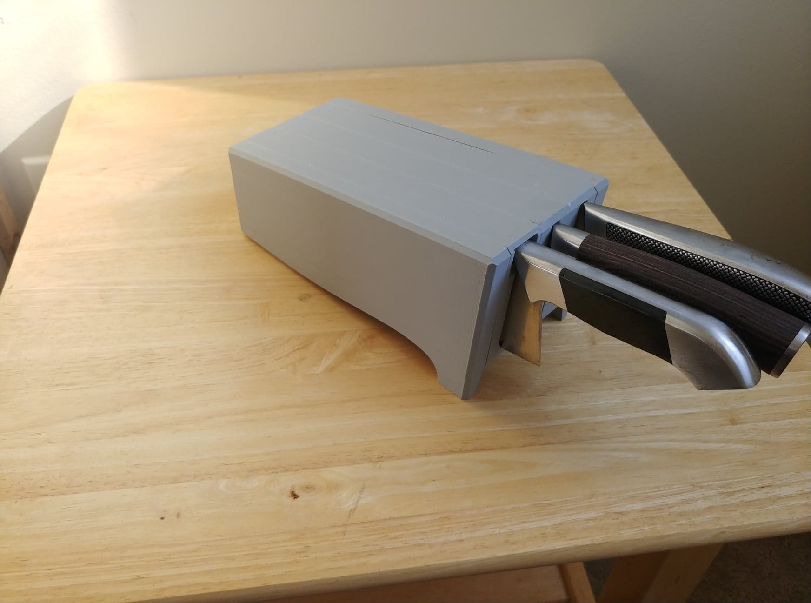

I don’t want to buy a knife block.
What happens if I get more knives than it has spaces? Or if I get a chef's knife that doesn’t fit in any of the holes? Thankfully, I don’t have to spend $30 on a superfluous knife block when I already spent much more on a 3D printer.
As a college student, I need to keep the future in mind when I design. I have no idea what type of kitchen knives I am going to pick up, so I need to design a knife block that can adapt. That is why I made my knife block completely modular.

Other than the location of the magnetic interfaces and an overall design envelope, each section of the block can be fully customized to fit any knife that I happen to purchase (within reason). All I need to do is tweak my template model and print! Also, I designed the magnets to self-align and snap together with a satisfying “click”.

While I only have three knives at this point, I am quite happy with the overall design. Theoretically I could keep adding on modules until it is more of a knife-bookcase than a knife block, but I doubt that will be necessary. If I were to do this again, I would add another magnet to the interface between blocks. It is decently secure with three magnets, but I would feel better with four. The only other thing I would change isn’t a design problem. If I could, I would have stopped myself from opening the window when I printed the parts the first time. The cold night air caused them to warp slightly, but since they work and are a lot of plastic to reprint, I kept them. However, I get a little bit more annoyed every time I look at the uneven tops of the modules, so I might end up reprinting them sooner or later.